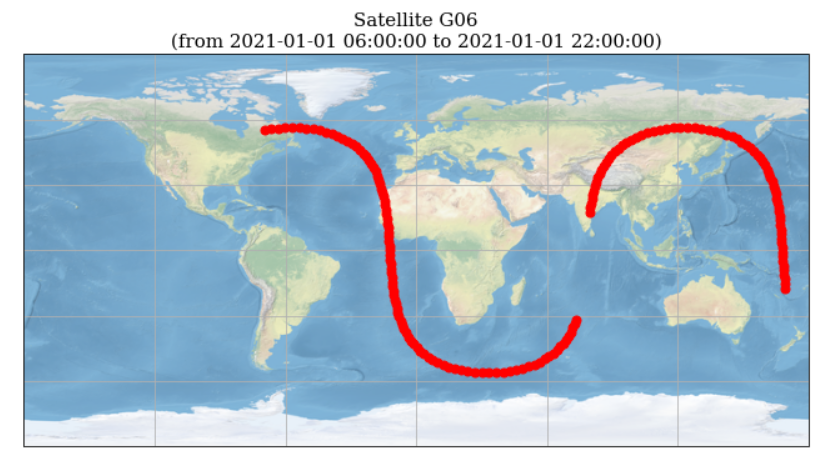
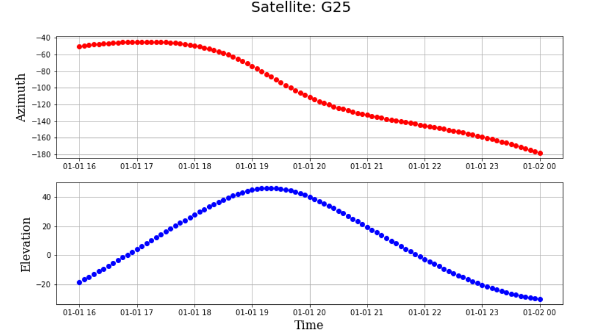

ORBIT MAP
From the ephemerides, position and velocity of a satellite can be computed up to a valid range in time of 2 hours. Satellite ephemerides are extracted from navigation messages sent out by satellites. For every entry in the navigation message of a particular satellite, the software estimates its coordinates up to a time of 2 hours. By combining this dataset, it's possible to visualize the shape of the orbit.
Global Map
The Figure below shows a sample output map for ground track with respect to the Earth’s surface. As shown in the Figure, “gaps” in the orbit are caused by insufficient data in the navigation message, i. e. when there is no new entry that specifies the positions after the 2 hours validity of the previous entry

Local Map
The Figure below shows difference in time of the azimuth and elevation of a satellite, calculated with respect to an arbitrary position set by the user.
